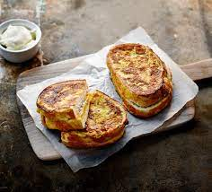
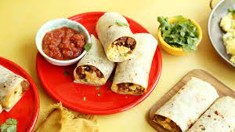
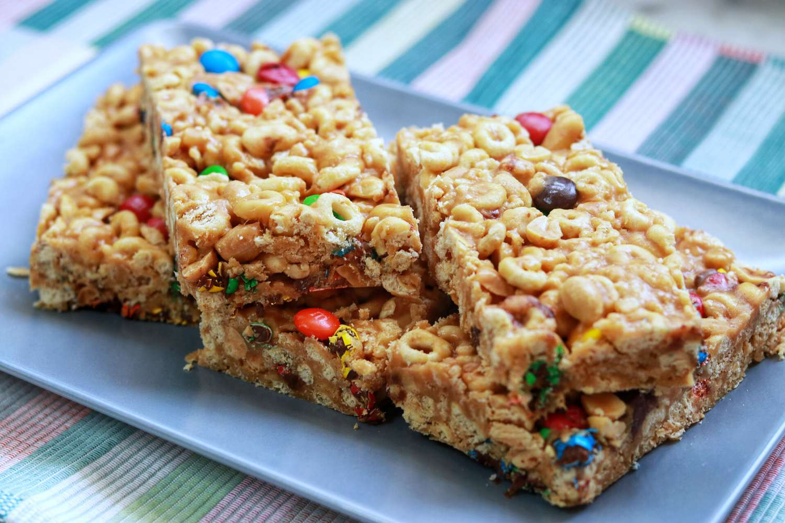

Kenpachi Breakfast
Kenpachi Recipes
"Toasted Honey Butter Bread"

This recipe is essentially a slice of baked sweet honey butter
toast that is cooked till golden brown. Resulting in a gorgeously crunchy
outside and a warm, soft and luscious middle. It can be topped with ice cream,
chocolate treats and fruit but it can be served plain too!
INGRIDIENTS:
1 tablespoon of the melted butter
1 slice of the milk bread
Top with 1/3 of the honey butter (about 1 tablespoon)
"Ham and Swiss Omelet"

Next time you go out to breakfast, try ordering an omelette instead of your usual
fried eggs! The word omelette is French, from a root meaning "thin, small plate,"
a reference to an omelette's flat shape. Historians have traced the omelette back to
ancient Persia, where cooks made savory dishes using beaten eggs.
INGRIDIENTS:
1 tablespoon butter
3 eggs
3 tablespoons water
1/8 teaspoon salt
1/8 teaspoon pepper
1/2 cup cubed fully cooked ham
1/4 cup shredded Swiss cheese
"Marmalade French Toast Sandwiches"

Sandwich each pair of bread slices with 2 tbsp of marmalade. In a large,
shallow dish, whisk together the eggs, crème fraîche, sugar, orange zest and juice.
Melt the butter in a large frying pan over a medium heat. Dip both sandwiches in the egg mixture,
then flip so that both sides are soaked.
INGRIDIENTS:
1 container (8 ounces) whipped cream cheese
12 slices sourdough bread
3/4 cup orange marmalade
4 large eggs, room temperature
2 tablespoons 2% milk
Maple syrup, optional
"Eggs & Chorizo Wraps"

Crack the eggs into the pan and fry them how you like them
(an almost-set yolk is best if you want to avoid any drips!). Spread some mayo
over each flatbread, add a handful of the rocket and a few capers with two halves of chorizo to each.
Put the egg on top, then fold up the end and the two sides before tucking in.
INGRIDIENTS:
12 ounces fresh chorizo
6 large eggs
2 tablespoons 2% milk
1 cup shredded cheddar cheese
flour tortillas (8 inches), warmed
Optional toppings: Thinly sliced green onions, minced fresh cilantro and salsa
"No-Bake Cereal Bars"

These no bake cereal bars are the perfect combo of chewy and crunchy.
They hold together well so they're portable and make a delicious, healthy whole-grain snack!
Like trail mix in bar form, these cereal bars are packed with nutrient-dense superfood seeds,
cereal with whole grain and dried fruit.
INGRIDIENTS:
2 cups sugar
2 cups corn syrup
1 jar (40 ounces) chunky peanut butter
6 cups Cheerios oat cereal
6 cups Chex crisp rice cereal